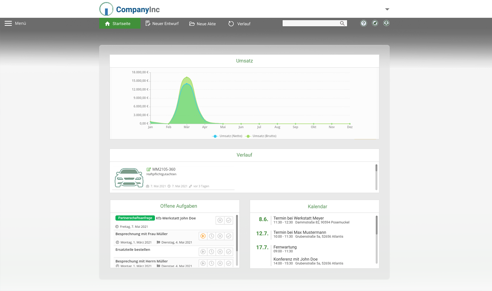
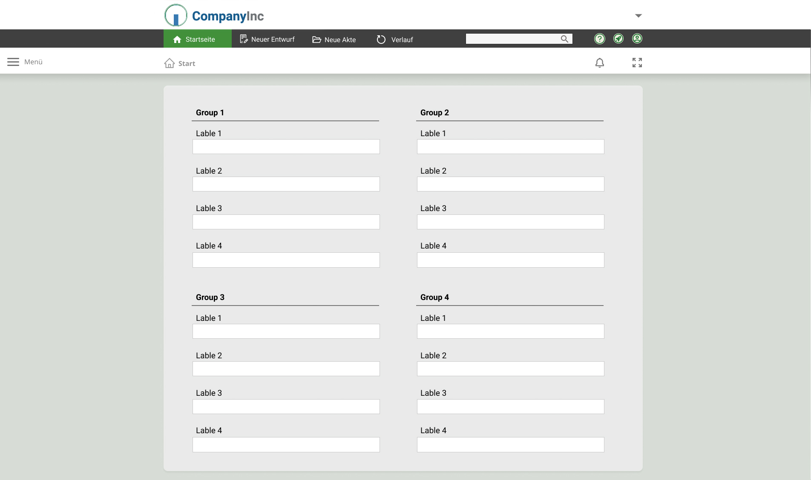

Redesigning a Complex Web Layout
This project was quite a challenging task. Not only is it a very comprehensive website as it is, but in an effort to stay competitive in the market, the host company is contentiously implementing more features into the existing UI. While this is a strategy that makes sense from a market perspective, it leads to some usability issues. In fact, the website has not been evaluated by a UX expert before. Some of the UX issues included excessive use of colors in the website widgets, bad readability of the texts, and information overload as well as poor information structures.
Final design:
Each widget of the original website had a dedicated color, and up to eight colors were used in one UI at times, including shades of the same color. Each of these was supposed to correspond to different functionalities. However, the use of color was not consistent over the website, and between UIs different colors were used for the same functions, and different functions often had the same color in one UI. To simplify the interface and avoid confusion among the users, the use of colors has been greatly reduced to a few highlight colors and one main font color, all of which are in line with the Web Content Accessibility Guidelines.

Furthermore, the widgets on the home page behaved unpredictably. They changed their size depending on the amount of user input in each widget, and thus they tend to supersede each other from the rows. To avoid this from happening the widget have been assigned to fixed positions on the website and are now scrollable so that the user always knows where to find the information he or she is looking for. To reduce information overload many of the functions that are not commonly used according to Google Analytics have been removed and the main content of the website is now centered with larger margins left and right so that the area that users need to analyze in search for information is smaller. The alignment of input fields was changed based on a small user survey in which different versions of information structures were tested.
Experimenting with website architecture:
For the redesign, it was, furthermore, important that the design also works on mobile devices as Google Analytics revealed that 25% of users use their smartphones to access the website. Mobile compatibility is an aspect that has previously not been in the center of attention, so the mobile version of the website was one of the most important aspects of the redesign process.
After weeks of experimenting with several prototypes, different functionalities, widgets, and page structures, the final design was completed and realized in conjunction with the developer team.